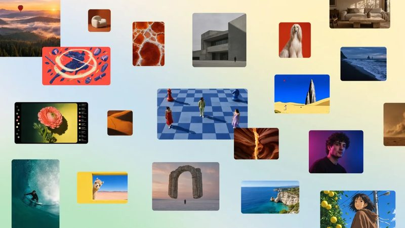
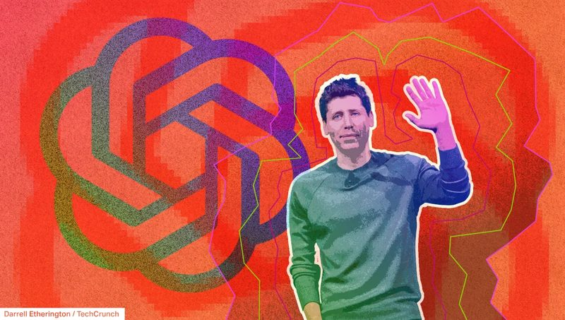
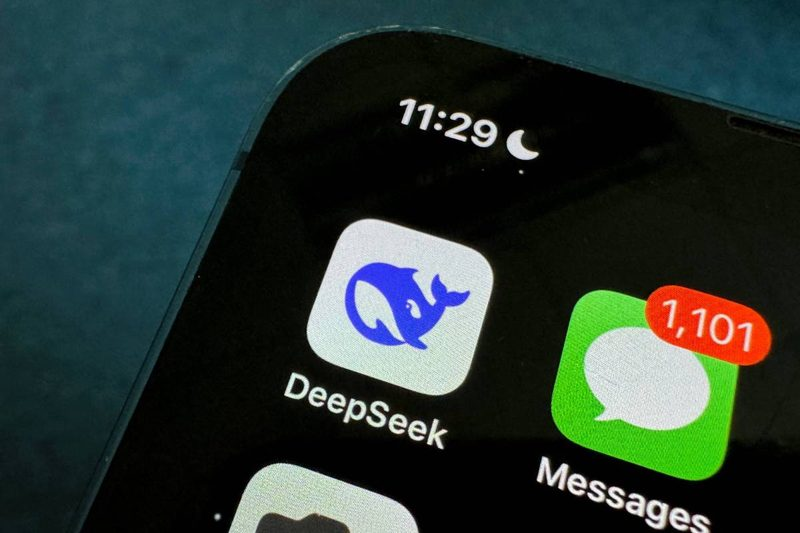

今日頭條
Anthropic 推出代理 App Claude Duet PLUS：AI 挖出 PHP 老漏洞，大量網站急修
Anthropic 推出會主動幫你整理工作的 Claude Duet；AI 找出藏了 20 多年的 PHP 漏洞，美國 NSA 要求網站立刻修補；1Password 讓 AI 代理登入時不必看到你的密碼。
📋 今天 7 則 Claude Duet：Anthropic 推出會主動做事的 AI 代理 AI 找出 PHP 藏了 20 多年的嚴重漏洞，NSA 要網站立刻修 1Password for Agents：AI 代理幫你登入，卻看不到密碼 Canva 推出自家生圖模型 Canva Craft，文字比較不會歪 Microsoft：AI 診斷困難病例，答對率是一般醫師的兩倍多 傳 OpenAI 洽募 300 億美元，估值 1.25 兆 美國禁用兩天後，傳 DeepSeek 募得約 150 億美元 圖：TechCrunch／Anthropic 新上線 #1 Claude Duet：Anthropic 推出會主動做事的 AI 代理 Anthropic 10 月 22 日推出 Claude Duet App，以 Claude Opus 5.5 為基礎，主打專業人士和小型企業。它能在自己的虛擬機器裡背景執行工作，每天產生簡報、做儀表板、依你的資料主動提出建議，可連接 Claude Marketplace 的 6,000 多個連接器和外掛。
💡 跟你有什麼關係： 像是每天早上自動把各個 App 的重點整理成一份簡報，或在你忙別的事時把資料整理好，需要你決定時才來問你。
⚠️ 目前是研究預覽，只開放 Pro、Max 用戶排候補名單；付款等敏感步驟要你核准，不會買賣證券或在帳戶間轉錢；官方也說它不擅長跑腿、訂票。
📰 原始來源：TechCrunch（2026-10-22） ↗ 圖：TechCrunch／Getty Images 新聞 #2 AI 找出 PHP 藏了 20 多年的嚴重漏洞，NSA 要網站立刻修 PHP 基金會已修補兩個嚴重漏洞，攻擊者可藉此進入伺服器檔案或資料庫；PHP 支撐約 70% 的網站，包含 WordPress。漏洞從 2004 年的 PHP 5 起就存在，由參與 OpenAI「Patch the Planet」計畫的資安公司 Calif 用 GPT-5.6 Sol 找到，Google 旗下 Wiz 也用 AI 獨立發現。美國 NSA 10 月 21 日警告，無法立即修補的網站應先下線。
💡 跟你有什麼關係： 一般人不用改什麼，但你常用的小店官網、部落格可能這幾天暫時打不開或出狀況；自己有網站的人要盡快更新到 PHP 8.5.12 等修補版。
⚠️ 官方表示發現時還沒有被實際攻擊的紀錄；但細節公開後，駭客也知道了，未修補的網站風險很高。PHP 8.1 以前的版本已不再支援，得先升級。
📰 原始來源：TechCrunch（2026-10-21） ↗ 圖：TechCrunch 工具 #3 1Password for Agents：AI 代理幫你登入，卻看不到密碼 密碼管理工具 1Password 10 月 22 日推出 1Password for Agents。AI 代理要登入你的帳號時，會先向 1Password 證明身分，你收到通知並確認後，由 1Password 代為填入帳密，代理本身拿不到密碼。支援 Claude Duet、OpenAI Dots、ChatGPT Work、Grok Bot、Meta Muse 等代理。
💡 跟你有什麼關係： 越來越多人讓 AI 代辦網購、查帳，直接把密碼丟給 AI 等於留下一份你管不到的副本；這種「每次登入都要你按同意」的做法比較安全。
⚠️ 同一天 Axios 報導美國銀行已偵測到帳戶內有 AI 代理活動，但多數分不出是不是本人授權；Chase 提醒客戶不要把帳號密碼給任何人。
📰 原始來源：TechCrunch（2026-10-22） ↗ 
圖：TechCrunch／Canva 新上線 #4 Canva 推出自家生圖模型 Canva Craft，文字比較不會歪 Canva 10 月 22 日發表第一個自家生圖模型 Canva Craft。它先規劃版面、物件比例和文字，再產生最高 2K、30 種比例的圖片，並可只改局部不動其他地方。訓練資料是 Canva 範本庫裡人工設計的海報、社群貼文、簡報、菜單等，而不是照片。
💡 跟你有什麼關係： 做活動海報、IG 貼文、餐廳菜單時，AI 生出來的字比較能讀，還能轉成可編輯的圖層再微調，不用重做。
⚠️ 所有用戶都可在 Dream Lab 分頁使用；品質是 Canva 自己的說法，實際效果還要自己試。之後也會透過 MCP 讓 ChatGPT、Gemini 叫用。
📰 原始來源：TechCrunch（2026-10-22） ↗ 圖：TechCrunch／Getty Images 研究 #5 Microsoft：AI 診斷困難病例，答對率是一般醫師的兩倍多 《Science》10 月 22 日刊出 Microsoft 研究，其 MAI-DxO 系統讓多個 AI 代理像醫師團隊一樣問診、開檢查、討論診斷。在《新英格蘭醫學期刊》的複雜病例模擬中答對 83%，單獨作業的家醫科、一般內科醫師是 36%。Microsoft AI 執行長 Suleyman 稱這是邁向「醫療超級智慧」的一步。
💡 跟你有什麼關係： 未來看診可能有 AI 協助醫師想到罕見疾病、少做不必要的檢查；但現在還不是讓你拿 AI 取代看醫生的時候。
⚠️ 比較對象不含專科醫師或醫療團隊，而這類複雜病例平常正是由他們處理；在急診病例上，加不加這套系統差異不大，進步主要來自底層模型變強。
📰 原始來源：TechCrunch（2026-10-22） ↗ 
圖：TechCrunch 資金 #6 傳 OpenAI 洽募 300 億美元，估值 1.25 兆 CNBC 10 月 22 日引述消息人士報導，OpenAI 正洽談最多 300 億美元的新一輪募資，投資前估值 1.25 兆美元，由 Coatue 和阿聯投資人領投，阿聯部分可能搭配取得更多算力。若成真將是史上估值最高的私人公司；OpenAI 3 月那輪估值為 8,520 億美元，6 月已祕密遞件準備上市。
💡 跟你有什麼關係： AI 公司越來越燒錢，募資和上市估值會影響之後 ChatGPT 等服務的定價與方案；持有相關科技股或 ETF 的人也會感受到市場情緒。
⚠️ 條件仍在談，可能改變；OpenAI 未回應。報導也提到 Anthropic 上市可能尋求 1.5～2 兆美元估值。
📰 原始來源：TechCrunch（2026-10-22） ↗ 
圖：TechCrunch 資金 #7 美國禁用兩天後，傳 DeepSeek 募得約 150 億美元 Bloomberg 10 月 22 日報導，美國下令聯邦機關移除 DeepSeek 兩天後，這家杭州 AI 公司募得約 150 億美元（約人民幣 1,000 億元），是中國最大規模的募資之一，潛在投資人包括寧德時代和騰訊。DeepSeek 6 月才以 500 億美元估值募得 70 多億美元。
💡 跟你有什麼關係： 美中 AI 競爭沒有因禁令降溫；DeepSeek 的免費開放模型很多 App 在用，資金充足代表後續新模型可能更快推出。
⚠️ 消息來自 Bloomberg 報導，DeepSeek 尚未回應，金額和投資人可能還會變動。
📰 原始來源：TechCrunch（2026-10-22） ↗ ✅ 今天可以做： 如果你有自己架的網站或部落格（WordPress 之類），今天問一下主機商或管理員，PHP 是否已更新到最新修補版。
🗂️ 過去 14 天